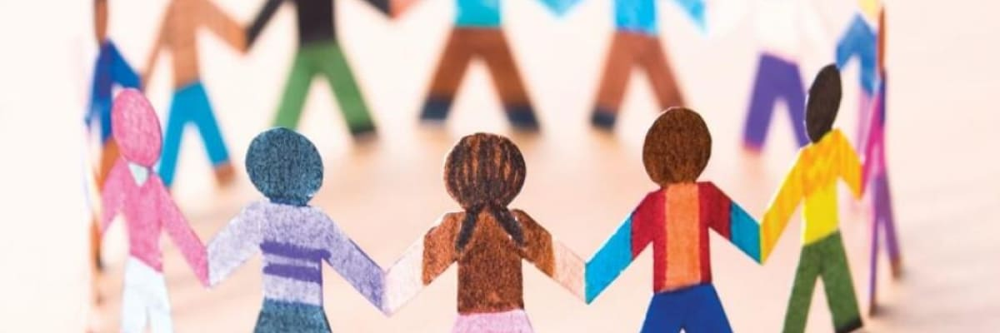

Soluções
-
Investimento em Inteligência e Tecnologia
Investir em inteligência e tecnologia é fundamental para garantir o desenvolvimento de uma sociedade.
-

Policiamento Comunitário
O policiamento comunitário é uma abordagem que busca aproximar a polícia da comunidade, visando a resolução de crimes.
-

Investimento em Políticas Sociais
O investimento em políticas sociais é essencial para a construção de uma sociedade mais justa e igualitária.